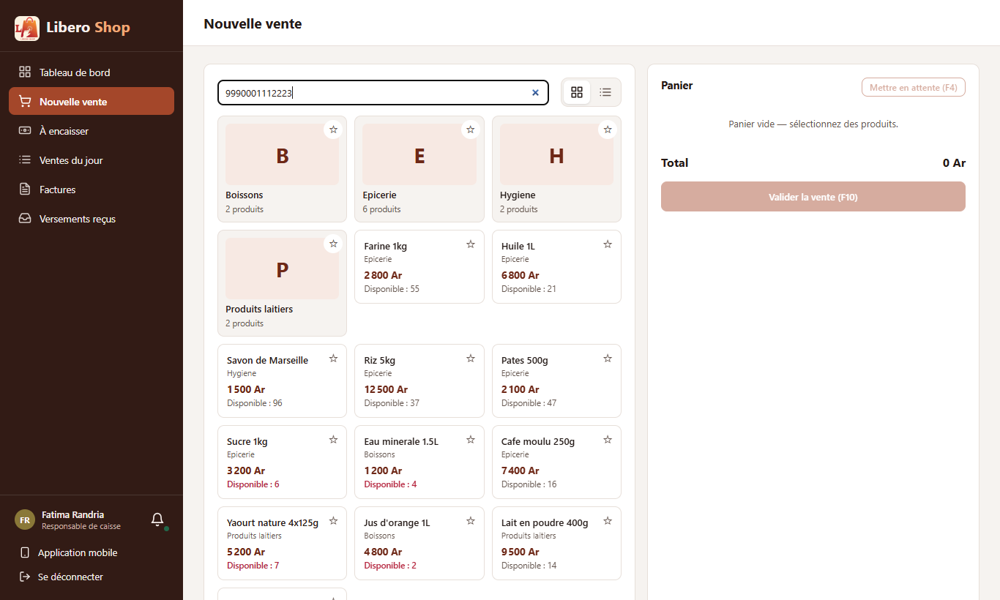
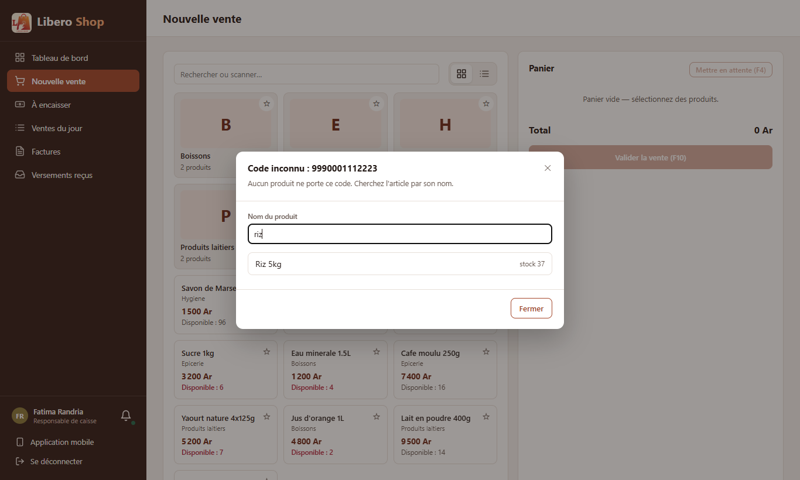
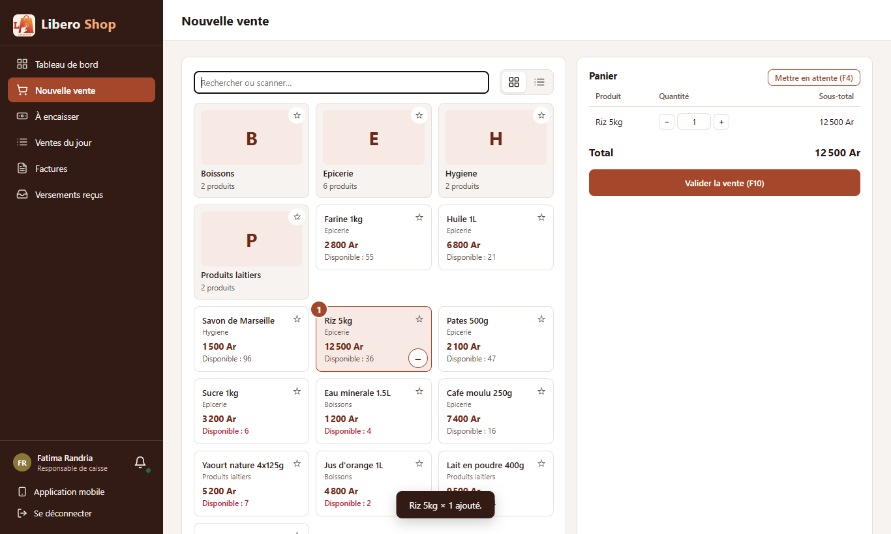
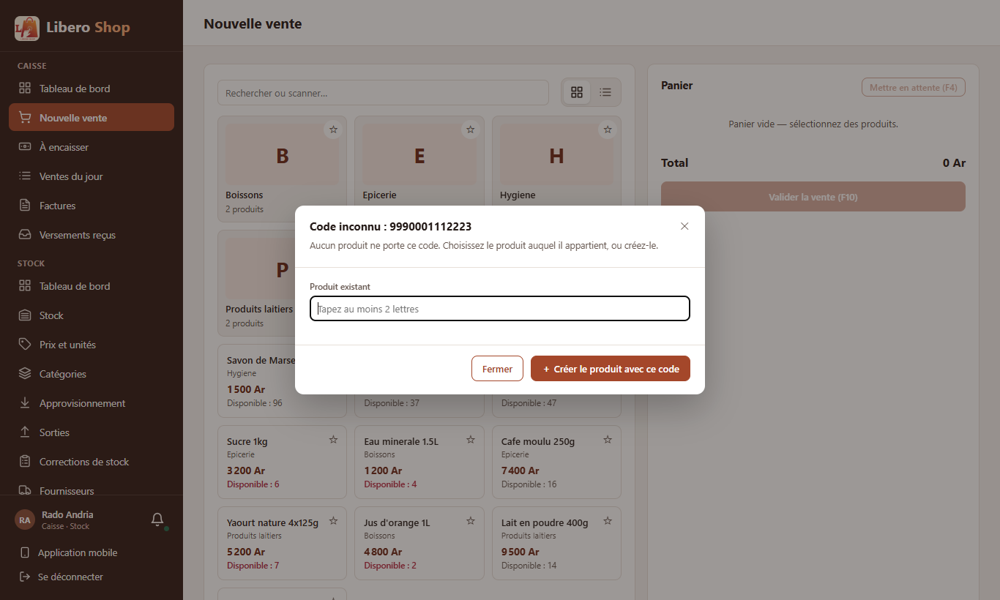
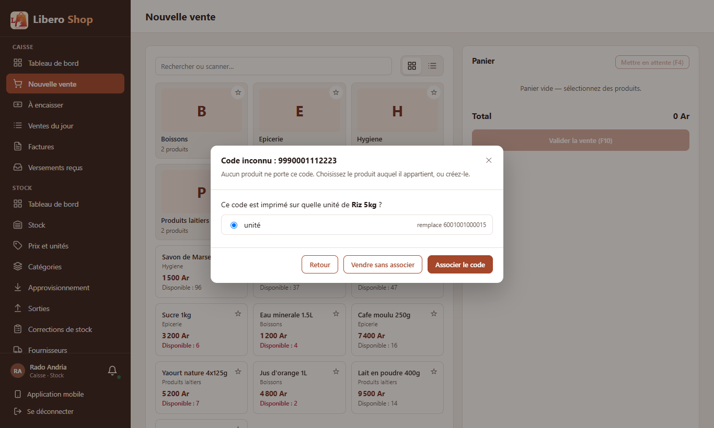
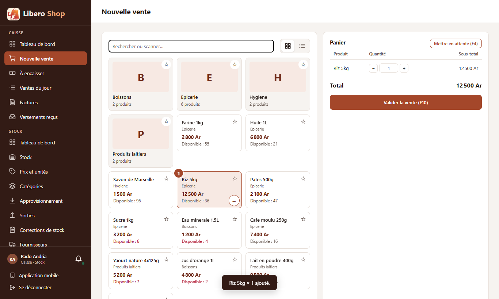
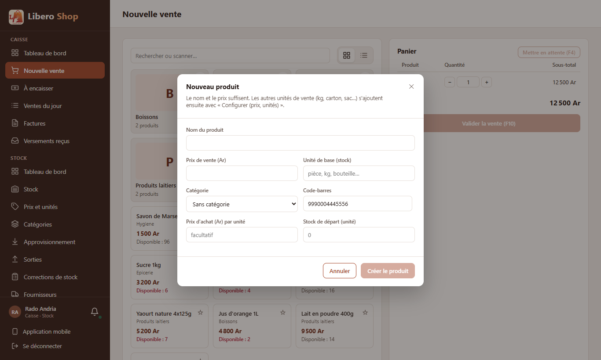

← Tous les comptes rendus de l'interface
UI-21Code-barres inconnu à la vente
- Un code-barres qu'aucun produit ne porte n'est plus une impasse : une fenêtre « Code inconnu » s'ouvre à la caisse et à la prise de commande.
- Le caissier cherche l'article par son nom et le met dans le panier ; le code reste de côté.
- Qui peut modifier le catalogue choisit le produit puis l'unité (pièce, carton…) qui porte ce code : le code lui est associé et l'article est ajouté.
- Il peut aussi créer le produit : la fiche s'ouvre avec le code déjà rempli.
- Le serveur refuse un code déjà porté par un autre produit ; le message dit lequel.
1. Le problème
Quand la douchette lisait un code inconnu, la caisse affichait seulement « Code inconnu ». Le caissier devait effacer, retrouver l'article à la main dans la grille, et le code restait inconnu pour la vente suivante. Pour l'enregistrer, il fallait quitter la vente, aller dans Prix et unités et ouvrir la configuration du produit.
2. Ce qui a été fait
Le code inconnu est maintenant gardé par la saisie de la vente, qui ouvre une fenêtre. Ce que propose la fenêtre dépend du droit de modifier le catalogue (le même droit que pour le menu « ⋮ » du produit).
Une fois le code associé ou le produit créé, la caisse relit le code comme si on venait de le scanner : l'article entre dans le panier dans la bonne unité (un carton si le code est celui du carton). Associer un code ne touche à rien d'autre du produit : ni le prix, ni le prix d'achat, ni le contenu du carton.
3. Le résultat en images
Le caissier : chercher l'article par son nom
Fatima — caisse Le code 9990001112223 n'est porté par aucun produit.
Elle tape « riz » et choisit l'article.



Qui gère le catalogue : associer le code
Rado — caisse et stock La même fenêtre propose en plus « Créer le produit avec ce code ». Après le choix du produit, elle demande sur quelle unité le code est imprimé et montre le code qu'il remplacera.



Qui gère le catalogue : créer le produit

4. Ce qui reste à décider
docs/todo-ui.md. Rien n'est envoyé pour l'instant : le caissier vend l'article, le code reste inconnu.docs/todo-ui.md comme décision attendue (plusieurs codes par unité : changement côté serveur).5. Tableau récapitulatif
| Fichier | Changement |
|---|---|
shared/components/unknown-code-dialog.component.ts | nouvelle fenêtre « Code inconnu » : recherche par nom, choix de l'unité, création |
core/catalog/barcode-assignment.ts | donne un code à l'unité de base ou à un carton, sans toucher au reste du produit |
core/sale/product-entry.ts | garde le code inconnu au lieu d'afficher un message ; ajoute l'article trouvé par son nom |
features/cashier/new-sale.component.ts | fenêtre branchée sur la nouvelle vente (touches F4/F10 en pause tant qu'elle est ouverte) |
features/orders/order-taking.component.ts | fenêtre branchée sur la prise de commande |
shared/components/product-create-dialog.component.ts | code-barres prérempli à l'ouverture |
core/catalog/barcode-assignment.spec.ts, core/sale/product-entry.spec.ts | tests : code sur l'unité de base ou sur un carton sans rien changer d'autre ; code inconnu confié à l'écran ; article trouvé ajouté |
Tests : tests de l'interface (ng test) au vert, 195 tests. Aucun changement côté serveur.